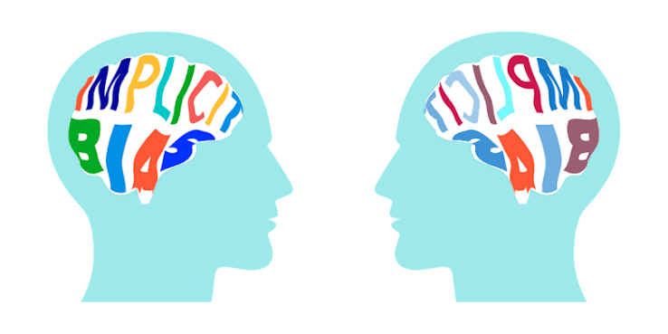

A guide for first-year college students
Start with curiosity
Ideas about implicit bias can feel abstract at first. One useful place to begin is with an everyday question: what assumptions might shape how we notice, interpret, or respond to another person? This guide offers a few starting definitions, questions, and places to learn more. You do not need to know everything before joining the conversation.
Draft note: This is starter copy for the group to personalize. Add a class example, a question your group discussed, or a brief explanation in your own voice in each section.
01 · A starting definition
What is implicit bias?
Implicit biases are associations or expectations that can influence judgment without a person deliberately choosing them. They can be shaped by repeated messages, experiences, and patterns in society. Everyone can absorb associations; noticing one is an opportunity to pause and ask where it came from, not a complete description of who someone is.
Think it through
When you meet someone new, what details do you notice first—and what might influence that attention?
Make it yours: Add your group's definition or an example from class here.
02 · A tool, not a verdict
What can the IBT tell us?
If your class uses “IBT” to mean an Implicit Bias Test, describe the specific activity or tool assigned in your course here. One widely known related tool is Harvard's Implicit Association Test (IAT), which measures how quickly a participant sorts concepts. A result is one limited data point—not a diagnosis, a measure of someone's character, or proof of how they will behave in every situation.
Read results with care
Consider the test's limits, the context in which it was designed, and how you felt taking it. Pair a result with reflection and attention to real-world choices rather than treating a score as the whole story.
Make it yours: Explain the IBT your class used and what your group took away from it.
03 · Seeing the whole picture
What is intersectionality?
Intersectionality is a way to understand how parts of identity—such as race, gender, class, disability, and sexuality—can overlap and shape someone's experiences together. It helps us ask whose experiences are missing when we talk about a group as if everyone in it encounters the same barriers. It is not simply a list of identities; it is a way to look at how systems and circumstances meet in real lives.
Think it through
Whose perspective might disappear if we describe an issue using only one identity or category?
Make it yours: Add an example or explain how intersectionality connects to your course.
04 · From concepts to choices
Putting the ideas into practice
Learning about bias is not about being perfect or guessing what someone else thinks. It can help us build small habits: slow down when a decision feels automatic, look for evidence beyond a first impression, and notice whether a rule or routine affects people differently. In a group, asking a thoughtful question can be a better first move than assuming we already understand someone's experience.
- Pause: What am I assuming, and what information supports that assumption?
- Broaden: Whose experience or perspective have I not considered?
- Follow through: What could I change in my next decision or interaction?
Make it yours: Share a practical action students could try in class, online, or on campus.
05 · Keep exploring
Resources for a next step
These links offer introductions and perspectives to explore. Read actively and compare what each source emphasizes.
-
Project Implicit: Take a test
Learn about the Implicit Association Test and explore the research project. A test is optional; review the site's explanations and limitations as you explore.
-
Kirwan Institute: Understanding Implicit Bias
An introductory overview of implicit bias from The Ohio State University's Kirwan Institute for the Study of Race and Ethnicity.
-
Kimberlé Crenshaw: The urgency of intersectionality
A short TED Talk introducing intersectionality and why it matters when people are overlooked in public conversations.
-
Learning for Justice: Speak Up at School
Practical guidance for responding constructively when bias or unfairness comes up in a school community.
Make it yours: Add course readings, library sources, videos, or campus support resources your group recommends.